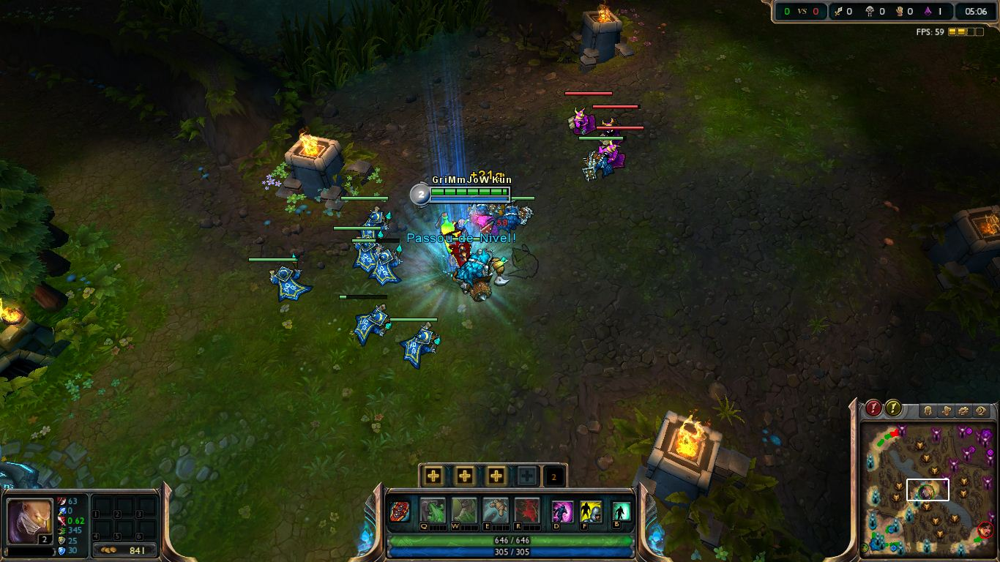

Personagens(){
Games
Variedade
Seleção de personagem LoL
Em decorrência dos jogos MOBA serem baseados em partidas, existe uma grande quantidade de personagens, com diferentes características e papeis na equipe, para que o jogo não se torne cansativo. Cada game que representa o estilo MOBA implementa estas características de forma diferente, mas basicamente temos 3 tipos de personagens, sendo eles Killers, que são os personagens que têm habilidades focadas para matar com eficiência, Tankers, que são os com grande potencial defensivo e Supports, que dão auxílio para os anteriores dentro e fora da batalha.
Builds
Builds são o mix de itens e habilidades para o personagem. Não há uma build certa ou errada, varia de jogador para jogador e de personagem para personagem. Existe uma build padrão para cada tipo de personagem, mas a partir de quando o jogador adquire experiência com o jogo (e com o personagem), ele personaliza essa build para que possa tirar o maior proveito dos itens/habilidades.
Obtendo $$
O dinheiro é obtido passivamente baseado em tempo, ou seja, seu dinheiro sempre está aumentando, mesmo que você esteja fora de ação. Mas, esta forma de conseguir dinheiro não é a mais eficiente, logo para conseguir mais dinheiro, é necessário que você elimine personagens inimigos, destrua torres e mate tropas. Tropas neutras também são válidas. Assistência em derrotas também gera dinheiro, logo, personagens suporte não saem lesados.
Obtendo XP

Upando no LoL
A experiência de combate é necessária para que se evolua, aumente o nível. A cada nível adquirido, você adquire também um ponto para colocar em uma das habilidades de seu personagem. Basicamente, ela é obtida quando se está perto de uma tropa/inimigo derrotado, não precisa nem que você tenha ajudado a derrotar. A experiência de combate é dividida entre os personagens aliados próximos, logo quanto mais aliados próximos de você, menor é a quantia de experiência recebida para cada um.
Itens
Os itens comprados no decorrer do jogo aprimoram a capacidade individual de cada personagem. De maneira geral, os itens são muito caros e exigem uma grande quantia de dinheiro. Por isso, itens fortes são compostos de outros itens mais baratos e de uma "receita", para que você os possa fazer de maneira progressiva, assim como acontece com o ganho de dinheiro no jogo. A mistura e combinação de diversos itens disponíveis na loja é um quesito fundamental para se tirar proveito máximo de cada personagem.
Habilidades
Colocando habilidades
Cada personagem tem diferentes características e diferentes habilidades e cada habilidade pode ser aprimorada a cada nível adquirido. Existem inúmeras habilidades e diferentes combinações (combos) de utilização. A ordem em que se habilita cada habilidade deve ser bem pensada, pois as habilidades não podem ser colocadas em níveis em sequência. Em geral, jogos do gênero MOBA disponibilizam 4 habilidades por personagem. É liberado que se aprimore uma habilidade em níveis ímpares, ou seja, a cada nível impar, tem-se a possibilidade de aprimorar uma habilidade já colocada. Por exemplo, no nível 4, uma combinação válida de pontos de habilidade seria 1 ponto na habilidade nº 1, 1 ponto na habilidade nº 2, e 2 pontos na habilidade nº 3, totalizando 4 pontos. Por mais que se tenha 4 pontos (consequentemente estando no nível 4), não se pode colocar, por exemplo, 3 pontos na habilidade nº 2, pois apesar de se ter pontos suficientes, ainda não foi liberada (foi liberado 1 ponto no nível 1, e outro no nível 3). Faz parte da mecânica dos jogos deste gênero. Além das 3 (ou mais, depende do jogo) primeiras habilidades, existe uma quarta que é a habilidade chamada de ultimate. Esta habilidade somente é liberada em níveis superiores e costuma ser a habilidade mais forte/útil de cada personagem.
}